Tier 7 — Space¶
Chemistry¶
| Item | What it’s for | Made at | Tags |
|---|---|---|---|
| SK 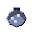 synthetic kerosene |
Rough lab-made kerosene | arc_furnace_electric |
chemistry, liquid, kerosene |
| TTtitanium tetrachloride | TiCl4 -- the in-between step from ilmenite ore to titanium sponge | arc_furnace_electric |
chem, titanium, intermediate |
| TTtungsten trioxide | WO3 powder; the feed that gets turned into tungsten metal | arc_furnace_electric |
chem, tungsten, oxide |
| ZTzirconium tetrachloride | ZrCl4 -- the feed for Kroll-process zirconium | arc_furnace_electric |
chem, zirconium, chloride |
Electronics¶
| Item | What it’s for | Made at | Tags |
|---|---|---|---|
| PC 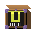 photovoltaic cell |
Convert sunlight to power | machine shop (electric) |
electronics, solar, photovoltaic |
Material¶
| Item | What it’s for | Made at | Tags |
|---|---|---|---|
| ISInconel superalloy ingot | Heat-proof Ni-Cr-Fe-Nb superalloy; for turbopumps and combustion chambers | arc_furnace_electric |
material, alloy, inconel |
| T6Ti-6Al-4V titanium alloy | Workhorse titanium alloy -- 90% Ti, 6% Al, 4% V | arc_furnace_electric |
material, alloy, titanium |
| STsintered tungsten rod | Dense W rod for nozzle throats, electrodes, and shielding | arc_furnace_electric |
material, tungsten, rod |
| TAtitanium alloy plate | Rolled Ti-6Al-4V sheet; for walls, tank tops, and heat shields | machine shop (electric) |
material, titanium, plate |
| TItitanium ingot | Remelted solid titanium; even, aerospace-ready | arc_furnace_electric |
material, titanium, ingot |
| TStitanium sponge | Spongy titanium metal; feed for the remelt (VAR) ingot | arc_furnace_electric |
material, titanium, sponge |
| TM 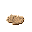 tungsten metal powder |
Tungsten metal powder -- highest melting point of any element | arc_furnace_electric |
material, tungsten, powder |
| ZCzircaloy cladding alloy | Nuclear-grade zirconium alloy; the skin around fuel rods | arc_furnace_electric |
material, alloy, zircaloy |
| ZSzirconium sponge | Spongy zirconium metal; feed for zircaloy and reactor parts | arc_furnace_electric |
material, zirconium, sponge |
Nuclear¶
| Item | What it’s for | Made at | Tags |
|---|---|---|---|
| EU 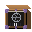 enriched UF6 (LEU) |
Low-enriched uranium gas | machine shop (electric) |
nuclear, uranium, enrichment |
| EU 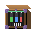 enriched uranium fuel rod |
Fuel nuclear reactors | assembler_workshop |
nuclear, fuel, uranium |
| LWlight-water nuclear reactor | Make steady around-the-clock power | assembler_workshop |
nuclear, reactor, light-water |
| UD 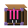 uranium dioxide pellet |
Baked uranium fuel pellet | arc_furnace_electric |
nuclear, uranium, fuel |
| UH |
Gas fed into enrichment | arc_furnace_electric |
nuclear, uranium, uf6 |
| YE |
Concentrated uranium powder | arc_furnace_electric |
nuclear, uranium, yellowcake |
Power¶
| Item | What it’s for | Made at | Tags |
|---|---|---|---|
| HS 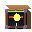 huge SPS solar array |
Collect power in orbit | assembler_workshop |
power, solar, sps |
| LS 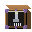 lunar solar power plant |
Generate lunar solar power | assembler_workshop |
power, solar, lunar |
| MP 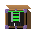 microwave power beamer |
Beam power from orbit | machine shop (electric) |
power, wireless, microwave |
Space¶
| Item | What it’s for | Made at | Tags |
|---|---|---|---|
| AP 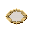 aluminum propellant tank |
Hold super-cold fuel | assembler_workshop |
space, tank, propellant |
| ACattitude control array | Orient spacecraft | assembler_workshop |
spacecraft, control, attitude |
| BC 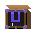 basic comms satellite |
Relay communications | assembler_workshop |
spacecraft, satellite, comms |
| BLbasic launch pad complex | Launch orbital rockets | assembler_workshop |
space, launchpad, rocket |
| BLbasic life-support loop | Keep a habitat livable | assembler_workshop |
space, life-support, air |
| BR 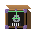 bulk regolith hopper |
Hold mined moon dirt | assembler_workshop |
space, isru, hopper |
| DI 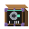 demo ice ISRU extractor |
Test-run on-site mining | assembler_workshop |
space, isru, ice |
| DLdistilled LOX propellant | The oxygen rockets burn | arc_furnace_electric |
rocket, propellant, lox |
| FC 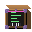 flight computer |
Command and control flight | machine shop (electric) |
space, avionics, computer |
| FQ |
A static-fired, flight-ready engine | assembler_workshop |
rocket, engine, kerolox |
| FS |
Loaded with flight propellant | assembler_workshop |
space, tank, propellant |
| GCguidance coil array | Steer rockets magnetically | machine shop (electric) |
space, guidance, magnetic |
| KT 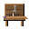 kerolox test rocket engine |
Test-fire rocket engines | machine shop (electric) |
rocket, engine, kerolox |
| LMlunar mass driver track | Fling cargo with magnets | assembler_workshop |
space, logistics, mass-driver |
| OTorbital three-stage rocket stack | Reach orbit from surface | assembler_workshop |
rocket, orbital, three-stage |
| RK 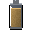 refined kerosene propellant |
Fuel for kerolox rockets | arc_furnace_electric |
rocket, propellant, kerosene |
| RL 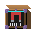 robotic lunar lander |
Deliver payloads to the Moon | assembler_workshop |
spacecraft, lunar, lander |
| RR 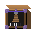 robotic regolith drill |
Dig up moon dirt for processing | assembler_workshop |
space, robotic, drill |
| SR 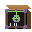 sample return capsule |
Return samples safely | assembler_workshop |
spacecraft, capsule, sample-return |
| SD 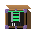 standard docking port |
Lock spacecraft together | assembler_workshop |
spacecraft, docking, interface |
| SC 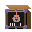 station core module |
Anchor the space station | assembler_workshop |
space, station, module |
| SS 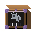 station solar truss module |
Hold panels and heat radiators | assembler_workshop |
space, station, module |
| TD 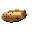 technology demonstrator satellite |
Test new space tech | assembler_workshop |
spacecraft, satellite, tech-demo |
| VE 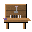 vertical engine test stand |
Test rocket engines | machine shop (electric) |
rocket, test-stand, vertical |
Field notes¶
The real process behind these items — what they are, how they were used, and why they matter. Tap to expand.
ACattitude control array
Reaction wheels or CMGs for precise spacecraft orientation without propellant expenditure.
A set of spinning flywheels (reaction wheels) or control moment gyroscopes (CMGs) that exchange angular momentum with the spacecraft to rotate it without firing thrusters. Enables precise pointing of instruments, solar panels, and antennas.
Real-world use · The ISS uses four control moment gyroscopes to maintain attitude, saving significant propellant. The Hubble Space Telescope uses reaction wheels for arcsecond-level pointing precision. CMGs are more power-efficient than thrusters for continuous attitude maintenance and are standard on all large spacecraft.
- When · First use on OSO-1 (1962); widespread use throughout the space age.
- Where · On all spacecraft requiring controlled attitude -- from CubeSats to space stations.
Why it matters · Attitude control without propellant expenditure is an elegant engineering solution: use stored angular momentum to rotate the spacecraft, then periodically desaturate using thrusters when the wheels are spinning near maximum speed. This is the space equivalent of the flywheel in a steam engine -- a mechanical store of rotational energy that smooths out variations. The flywheel appeared in T2; the attitude control array is its T6 descendant. In Conduvia, proper attitude control is required for rendezvous, solar panel orientation, and instrument operation.
BCbasic comms satellite
First-generation communications relay satellite -- enables over-the-horizon contact.
A basic geostationary or low-Earth-orbit communications relay satellite carrying S-band and X-band transponders. Receives signals from one ground station and retransmits them to another, enabling contact between surface locations with no line-of-sight.
Real-world use · Telstar 1 (1962) was the first active communications satellite; Syncom 3 (1964) the first geostationary comms satellite. Today's GEO comms satellites carry hundreds of transponders covering vast geographic areas. LEO constellations (Starlink, OneWeb) use many smaller satellites to provide global broadband.
- When · 1962 (Telstar) onward; mass deployment of LEO constellations 2019–present.
- Where · LEO (200–2000 km altitude) for low-latency coverage; GEO (35 786 km) for hemispheric coverage with three spacecraft.
Why it matters · A single comms satellite enables reliable contact between any two points that can see it -- a capability that took surface relay towers, cables, or ship messengers previously. In network terms: one satellite links every surface node with clear sky access to every other such node, replacing N² direct connections with N connections to one hub. This is the T6 version of the same connectivity principle introduced in T0 by waypoints and camp markers -- but now the reach spans a planet.
BLbasic launch pad complex
Ground support infrastructure for a small orbital launcher.
A launch pad complex including a launch mount, propellant loading lines, flame trench and deflector, umbilical tower, and basic blast-resistant service structures. Designed to support one launch configuration at a time.
Real-world use · Launch pads are expensive, specialised infrastructure. The flame trench redirects combustion gases to prevent structural damage on ignition. The flame deluge system quenches engine exhaust and suppresses acoustic damage. Umbilical lines supply propellant, pressurisation, and power to the vehicle until milliseconds before launch.
- When · 1950s onward with modern launch complexes.
- Where · Coastal or inland sites with clear airspace, preferably at low latitudes to maximise rotational velocity contribution to orbital energy.
Why it matters · The launch pad is infrastructure, not a product -- it does not go to orbit. It is the prerequisite for everything that does. This is a pattern repeated throughout Conduvia: kilns make ceramics but stay on the ground; bloomeries make iron but don't move; launch pads support spacecraft but are not spacecraft. Infrastructure cost is real. The launch pad requires significant resources to build, and its capabilities directly constrain what vehicles you can fly from it.
BLbasic life-support loop
Closed-loop atmospheric control -- recycles CO₂ to O₂ and manages humidity.
A basic environmental control and life support sub-system providing atmospheric revitalisation: CO₂ removal, O₂ generation via water electrolysis, trace contaminant control, and humidity management. Designed for a small crew in a pressurised module.
Real-world use · The International Space Station uses the Environmental Control and Life Support System (ECLSS), which includes the Carbon Dioxide Removal Assembly (CDRA), the Oxygen Generation Assembly (OGA) using electrolysis, and the Water Recovery System (WRS). These systems recycle ~90% of water from humidity, urine, and other sources. Without them, resupply would be prohibitively expensive.
- When · 1960s (basic Gemini systems) through present (ISS ECLSS).
- Where · Any crewed spacecraft or habitat. Scaling up to closed ecological systems (biospheres) is an active research area.
Why it matters · Life support forces you to think in closed loops rather than linear flows. On Earth, you exhale CO₂ and it is absorbed by plants. On a space station, you must actively remove it or you die within hours. The same logic applies to water, waste, and atmosphere composition. The closed-loop life support system is the physical implementation of circular economy thinking: waste output of one process is input to another. CO₂ → electrolysis → O₂; condensed water → filtration → drinking water. In Conduvia, this module enables sustained lunar or orbital base operations.
DIdemo ice ISRU extractor
In-situ resource utilisation demo unit -- extracts water ice from lunar regolith.
A demonstration-scale ISRU (In-Situ Resource Utilisation) system designed to excavate and thermally process permanently-shadowed lunar regolith to extract water ice, then electrolyse it into hydrogen and oxygen for propellant or life support.
Real-world use · NASA's MOXIE experiment on Perseverance demonstrated oxygen production from Martian CO₂. Lunar ISRU for water extraction targets permanently shadowed regions (PSRs) at the poles where ice deposits have been confirmed by orbital spectroscopy and the LCROSS impact. Producing propellant in-situ is the key to economically viable lunar surface operations -- launching all propellant from Earth is extremely expensive.
- When · 2020s (demonstration missions); operational systems projected for 2030s.
- Where · Lunar south pole permanently shadowed craters (Shackleton, Haworth, Nobile) where water ice concentrations are highest.
Why it matters · ISRU is the concept that breaks the fundamental limitation of space exploration: you cannot carry everything you need from Earth. If you can extract water from lunar ice, you have propellant (H₂/O₂) for rockets, water for life support, and oxygen for breathing -- all from local resources. This is the T6 version of the same idea introduced in T0 by foraging: use what's already where you are rather than carrying everything. The difference is scale and technology. In Conduvia, the ISRU extractor is a prerequisite for self-sustaining off-world operations.
DLdistilled LOX propellant
Liquid oxygen (LOX) -- the oxidizer half of kerolox and hydrolox rocket engines.
Cryogenic liquid oxygen (-183 °C) produced by fractional distillation of air and used as the oxidizer in liquid-propellant rocket engines. Provides the oxygen for combustion without carrying an air supply; LOX has a much higher density than gaseous oxygen and allows compact propellant tanks.
Real-world use · Liquid oxygen as rocket oxidizer was proposed by Robert Goddard and Konstantin Tsiolkovsky independently. The first LOX/gasoline rocket flight was Goddard's 1926 launch. LOX is produced in bulk by the Linde-Frankl process -- air is compressed, cooled, and fractionated. It is pale blue, highly reactive, and must be handled with care to avoid contact with organic materials.
- When · 1926 (first flight) onward; industrial LOX since the 1890s.
- Where · Air separation units co-located with launch facilities to minimise cryogen boil-off during transport.
Why it matters · LOX is the oxidizer that makes chemical rocketry possible -- in space, there is no atmospheric oxygen, so rockets must carry their own. The cryogenic nature of LOX (-183 °C) imposes major engineering constraints: insulated tanks, cryogenic-rated seals, controlled venting to prevent overpressure, and rapid topping-off before launch as boil-off removes propellant continuously. In Conduvia, the LOX production chain (air separation → distillation → cryogenic storage) represents industrial gas processing at scale.
EUenriched uranium fuel rod
Slightly enriched UO₂ ceramic pellets in zircaloy cladding -- the reactor fuel element.
A fuel assembly containing uranium dioxide pellets enriched to 3–5% U-235 (natural uranium is 0.7%) pressed into ceramic form and clad in zirconium alloy tubes. The ceramic form is chosen for stability at extreme temperatures; zircaloy cladding provides a structural and containment barrier while being nearly transparent to neutrons.
Real-world use · Uranium enrichment is the most technically demanding step in the nuclear fuel cycle. Natural uranium must be converted to UF₆ gas, then processed through gaseous diffusion or centrifuge cascades to increase the U-235 fraction. The fuel fabrication step then converts enriched uranium back to ceramic UO₂, pressed into pellets, sintered, and clad in tubes.
- When · 1940s (enrichment development for weapons); commercial fuel fabrication 1950s onward.
- Where · Enrichment facilities (centrifuge cascades); fuel fabrication plants; delivered to reactor sites under strict safeguards.
Why it matters · The fuel rod embodies the nuclear fuel cycle -- one of the most complex industrial supply chains humans operate. Mine → mill → convert → enrich → fabricate → operate → cool → reprocess or store. Each step requires specialised infrastructure and strict material accounting. The ceramic fuel form is a deliberate engineering choice: UO₂ melts at 2865 °C, far above operating temperatures, and if cladding fails the ceramic holds fission products rather than releasing them. In Conduvia, fuel rods are the input to the nuclear reactor and represent the peak of the T6 material processing chain.
KTkerolox test rocket engine
RP-1/LOX first-stage engine -- the workhorse of early orbital access.
A regeneratively-cooled liquid-propellant rocket engine burning refined kerosene (RP-1) with liquid oxygen (LOX). The kerolox combination offers high density and good specific impulse for first-stage use, with decades of flight heritage. This unit is a development engine validated on the test stand before flight.
Real-world use · Kerolox engines power some of the most prolific launchers in history: the R-7 family (Soyuz), the Falcon 9/Falcon Heavy, and the Saturn V first stage (F-1). The kerosene/LOX combination was chosen over hydrogen because RP-1 has a higher energy density by volume, is easier to store, and turbopumps handle it more reliably than cryogenic hydrogen at the engineering maturity of the 1960s.
- When · 1950s onward; the R-7 flew in 1957, Falcon 9 first flew 2010.
- Where · Engine test facilities first; then launch pads once qualification is complete.
Why it matters · Rocket engines are the single most thermodynamically demanding machine humanity builds routinely. Chamber pressures of 200 bar, combustion temperatures of 3500 K, and structural mass fractions of 1–2% of thrust force -- the engineering margins are extremely tight. Regenerative cooling (routing propellant through channels in the nozzle wall before it enters the chamber) is what makes the structure survive combustion temperatures that would melt any known material. In Conduvia, this engine is the proof-of-concept for the orbital stack. You test it on the stand, validate performance data, and then integrate it into the launch vehicle.
LWlight-water nuclear reactor
Pressurised or boiling water fission reactor -- high power density, no combustion.
A thermal fission reactor using slightly enriched uranium fuel, ordinary water (H₂O) as both moderator and coolant, and a reactor pressure vessel to contain the primary circuit. Produces steam to drive turbines for electricity generation at power densities no chemical fuel can approach.
Real-world use · Light-water reactors (PWR and BWR) produce roughly 70% of all nuclear electricity worldwide. The design emerged from the US Navy's submarine propulsion programme in the 1950s under Admiral Rickover. The pressurised water concept was chosen for its inherent negative temperature coefficient of reactivity -- as the core heats up, the reaction rate naturally decreases, providing passive safety.
- When · First submarine (USS Nautilus) 1955; first commercial PWR (Shippingport) 1958.
- Where · Coastal or riverine locations for cooling water supply; remote from population centres for safety radius.
Why it matters · The light-water reactor is the step where energy production breaks free of combustion entirely. Every previous tier burns something: wood, charcoal, coke, coal gas, oil. The reactor fissions uranium -- a physical process that releases orders of magnitude more energy per kilogram than any chemical reaction. The challenge is not producing the energy but controlling it and converting it to usable forms (electricity). The containment vessel, control rods, and emergency core cooling systems are all answers to the same question: how do you safely handle a process that runs at millions of degrees Celsius inside the fuel pellets?
LSlunar solar power plant
Large-area photovoltaic array for sustained lunar surface power -- no atmosphere to scatter light.
A deployed photovoltaic array designed for the lunar surface. Without an atmosphere, solar irradiance is the full 1361 W/m² at all times the sun is visible. Combined with high-efficiency multi-junction cells, a lunar solar plant produces more power per square metre than an equivalent terrestrial array.
Real-world use · Solar panels on the ISS generate about 90 kW from 2500 m² of arrays. On the lunar surface, Artemis base camp planning calls for kilopower nuclear reactors for the polar base (where the sun is never high) and solar arrays for equatorial surface ops. SpaceX Starship's lunar variant and the ESA lunar surface power concepts both use solar as the primary power source where applicable.
- When · ISS arrays operational 2000; lunar surface solar concepts in active development 2020s.
- Where · Equatorial and mid-latitude lunar sites with continuous sun access. Polar sites need nuclear because of permanent shadow periods.
Why it matters · Lunar solar is more powerful per area than Earth solar because there is no atmosphere to scatter or absorb light. But it has a critical vulnerability: the lunar night lasts 14 Earth days. Any base that relies on solar alone needs either enormous battery storage or secondary power for the night cycle. This is the same intermittency problem as terrestrial renewables, scaled to 336-hour night cycles. In Conduvia, combining lunar solar with nuclear provides the redundant power that sustained operations require.
OTorbital three-stage rocket stack
Three-stage orbital launch vehicle -- the result of the full Tier 6 build chain.
A complete orbital launch vehicle assembled from a first stage, second stage, and payload fairing. Three-stage architecture allows each stage to shed mass as propellant is consumed, enabling payloads to reach orbital velocity that a single-stage vehicle cannot achieve with chemical propellants.
Real-world use · Multi-stage rocketry was proposed by Konstantin Tsiolkovsky in the 1890s and enabled by the Rocket Equation. Staging is necessary because no practical propellant gives enough specific impulse for a single-stage vehicle to reach orbit with a useful payload fraction. The Saturn V (3-stage), Soyuz (2-stage with strap-ons), and Falcon 9 (2-stage) all use staging for this reason.
- When · 1940s (V-2 precursors) through present.
- Where · Launch complexes with vertical assembly facilities. The stack is assembled vertically, transported to the pad, and fuelled for launch.
Why it matters · The three-stage rocket is the culmination of every tier in Conduvia. Its mass breakdown illustrates the challenge: at liftoff, propellant is ~90% of the vehicle's mass. The payload may be 2–3%. Everything in between -- structure, engines, avionics, plumbing -- must be as light as possible. The rocket equation (Tsiolkovsky's) states this precisely: delta-v = Isp × g₀ × ln(m_wet / m_dry). Higher specific impulse, or higher mass ratio, equals more delta-v -- the only thing that matters for changing orbits.
RKrefined kerosene propellant
Highly refined kerosene (RP-1) for rocket engine use -- low-sulfur, narrow cut.
A highly refined grade of kerosene with tightly controlled chemical composition, extremely low sulfur and olefin content, and a narrow distillation range. Standard fuel for kerolox rocket engines; chosen for its volumetric energy density, stability, and compatibility with metal turbopump hardware.
Real-world use · RP-1 (Rocket Propellant-1) was developed in the 1950s as a standardised rocket fuel meeting MIL-P-25576 specification. It is refined from crude oil through fractional distillation, hydrotreatment, and strict quality control. Standard kerosene cannot substitute -- contaminants cause coking in the regenerative cooling channels.
- When · 1957 onward (Sputnik R-7 used RP-1 precursor); RP-1 specification formalised by 1959.
- Where · Produced at petroleum refineries with specialised processing units; stored cryogenically if sub-cooled.
Why it matters · RP-1 illustrates that 'fuel' is not a single material -- specification matters. The difference between road diesel and RP-1 is a long list of impurity limits and a controlled distillation cut. That specificity is what makes it work in a turbopump at 100 000 RPM without fouling the lines. In Conduvia, the refining chain from raw petroleum to RP-1 represents T6 chemical processing.
RRrobotic regolith drill
Autonomous drill head for lunar or planetary surface excavation.
A remotely-operated or autonomous rotary-percussive drill designed to excavate compacted regolith or rock and feed it to an ISRU hopper. Hardened for abrasive regolith conditions and radiatively cooled for use in vacuum.
Real-world use · Regolith is highly abrasive due to the lack of weathering -- particles are sharp and angular. Drill bits used in vacuum must be hardened beyond terrestrial standards. The ESA/NASA PILOT project and several commercial ventures are developing regolith excavation systems for near-term lunar ISRU missions.
- When · 2020s development; operational systems projected for 2030s lunar surface.
- Where · Lunar surface, particularly in permanently shadowed regions for ice access.
Why it matters · The regolith drill is mining technology adapted to an environment without water, atmosphere, or heavy machinery infrastructure. Compare it to T0's hammerstone: both are percussion-based excavation tools. The principles are identical; the engineering constraints are completely different. In space, every design choice must account for vacuum, extreme thermal cycling (-170 °C to +120 °C on the lunar surface), abrasive unweathered particles, and the impossibility of easy maintenance.
SDstandard docking port
Hard-dock interface for joining spacecraft and station modules.
A mechanical and electrical interface assembly allowing two spacecraft to attach firmly, share power and data, and transfer crew and cargo between sealed volumes. Uses capture latches, alignment guides, and sealing gaskets for vacuum-tight connection.
Real-world use · The first docking in space occurred with Gemini 8 (1966). The International Docking System Standard (IDSS) was developed to allow spacecraft from different nations to dock to a common interface -- the ISS uses both Russian APAS docking systems and the US NDS (NASA Docking System). SpaceX Dragon, Boeing Starliner, and future commercial vehicles all use a standard docking interface.
- When · 1966 (first docking) onward; IDSS standardised 2011.
- Where · On all spacecraft and station modules designed for rendezvous-and-docking operations.
Why it matters · The docking port is an interface standard -- its entire value comes from standardisation. A non-standard docking port is useless; a standard one connects any conforming spacecraft to any conforming station. Interface standards are how complex systems scale. In Conduvia, standard ports enable modular station assembly -- just as Conduvia's crafting uses standardised item IDs to connect recipes across tiers without hardcoding every combination.
VEvertical engine test stand
Vertical hot-fire stand -- validate engine performance before flight integration.
A structural test facility that holds a rocket engine in the firing position, with propellant feed, ignition, and data-acquisition systems. Used to measure thrust, specific impulse, and combustion stability before the engine is qualified for flight.
Real-world use · Every rocket engine is test-fired extensively before flight. NASA Stennis Space Center and SpaceX's test facilities in Texas have fired engines for hundreds of thousands of cumulative seconds before any given design reaches a launch vehicle. Testing catches manufacturing defects, design anomalies, and material fatigue before they cause mission loss.
- When · 1940s onward as a standard practice.
- Where · Remote sites with propellant infrastructure and acceptable blast radius. Water is often piped in for cooling and acoustic suppression.
Why it matters · The test stand embodies the principle of progressive validation: test the component, then the sub-system, then the system, then the vehicle. This 'test before fly' approach is what separates modern engineered systems from early trial-and-error. In Conduvia it gates engine integration: you can't put an unvalidated engine into the orbital stack.